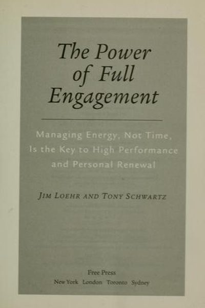

Library › Productivity
The Power of Full Engagement — Summary & Key Lessons

Managing energy, not time, is the key to high performance — the system behind world-class athletes, applied to you.
📖 OPEN THE FULL INTERACTIVE BREAKDOWN →🌐 Read it in Hindi, Hinglish, Gujarati, Tamil & 22 more languages — free, with audio.
💡 The Big Idea
Jim Loehr and Tony Schwartz spent decades training world-class athletes — then realized the same principles apply to executives, parents and anyone who performs. Their thesis: the real currency of high performance is ENERGY, not time. The best performers work in sprints — full engagement followed by full recovery — because energy is renewed by oscillation, not by linear grinding. Their system: four dimensions of energy (physical, emotional, mental, spiritual), a training regimen that treats energy like a muscle, and rituals that make renewal automatic.
🧠 The 5 Key Lessons
Lesson 1: Energy, Not Time, Is the Currency
Full Engagement
Time is the same for everyone; energy is not — and output follows energy. An hour at 40% engagement is worthless; 40 minutes at 90% beats it twice over. The authors' research with executives showed that 'time management' fails because it ignores the body's actual fuel: sleep, food, fitness and emotional state determine what those hours can produce.
📖 Example: Loehr and Schwartz's corporate clients — burned out, over-caffeinated, running on fumes — showed measurable performance gains simply from sleeping more, eating better and training like athletes, without adding a single hour of work. Read the full example →
⚡ Do this: Rate your energy every 2 hours today (1–10). Notice the pattern — then schedule your hardest work for your highest-energy window.
Lesson 2: Oscillate: Sprints Beat Marathons
The Pulse
Human beings are oscillators, not constant-output machines. The heart beats, the lungs breathe — and performance follows the same pulse: engagement, then recovery. The authors' rule: work in 90-minute sprints of full focus, then take real recovery — because pushing past the oscillation point produces diminishing returns and eventually breakdown.
📖 Example: The authors' data from athletes: those who trained in hard/easy cycles outperformed those who trained hard daily. Applied to office workers: 90-minute sprints with walking breaks beat 10-hour grinds — and the sprinters were healthier, happier and more… Read the full example →
⚡ Do this: Try one 90-minute sprint today: 90 minutes of full focus, then a 15-minute real break (walk, not phone). Repeat. Compare with yesterday.
Lesson 3: The Four Energies: Physical, Emotional, Mental, Spiritual
The Four Dimensions
Energy comes in four dimensions and they feed each other: physical (sleep, food, fitness — the foundation), emotional (positive emotions like joy and challenge fuel engagement), mental (focus, mental stamina), and spiritual (purpose — the energy source that outlasts all the others). Neglect any dimension and the whole system degrades.
📖 Example: The authors describe executives whose physical decline (poor sleep, no exercise) quietly eroded their emotional resilience and mental sharpness — and one whose sense of purpose carried him through a crisis that exhausted everyone around him. Read the full example →
⚡ Do this: Score your four energies (1–10). Pick the lowest and add ONE ritual this week: earlier sleep, a walk, a gratitude moment, or a purpose check.
Lesson 4: Rituals Beat Willpower
Rituals
Energy management can't run on willpower — willpower is finite and exhaustible. The solution is rituals: specific, scheduled behaviors performed automatically until they become identity. The authors' formula: define the desired behavior, schedule it precisely, and perform it consistently for 30–60 days until it's automatic. Rituals are where change actually lives.
📖 Example: Loehr's athletes don't 'decide' to train — they train at 5:30 every day, no negotiation. The authors transplanted this to executives: a fixed 6 AM workout, a fixed 10 PM lights-out, a fixed 'first hour no email' — each became automatic within weeks. Read the full example →
⚡ Do this: Design ONE energy ritual with a fixed time ('at ___, I will ___'). Run it daily for 30 days before adding another.
Lesson 5: Purpose Is the Ultimate Fuel
Spiritual Energy
The deepest energy source is meaning: people running on purpose outperform people running on obligation, because purpose generates energy while obligation consumes it. The authors' definition of purpose: what you stand for, expressed in values converted into action. When the 'why' is strong, the 'how long' stops mattering.
📖 Example: The book tells of executives who reconnected with their core values — family, craft, contribution — and found reserves of energy they didn't know they had, while their purely career-driven colleagues burned out first. Read the full example →
⚡ Do this: Write your values in 5 words and your purpose in one sentence. Read them every morning for a week — then schedule one action that serves them.
✅ 5-Step Action Plan
- Track your energy hourly for a day; schedule work to your peaks.
- Run 90-minute sprints with real recovery breaks.
- Score your four energies; add one ritual for the lowest.
- Automate one ritual for 30 days — no negotiations.
- Write your purpose sentence; read it daily; act on it weekly.
💬 Best Quotes from The Power of Full Engagement
- “Energy, not time, is the fundamental currency of high performance.”
- “The key to full engagement is the ritualized management of energy.”
- “We live in a digital time, but we have analogue bodies.”
Interactive version: mark lessons as read, listen in your language, share quote cards.